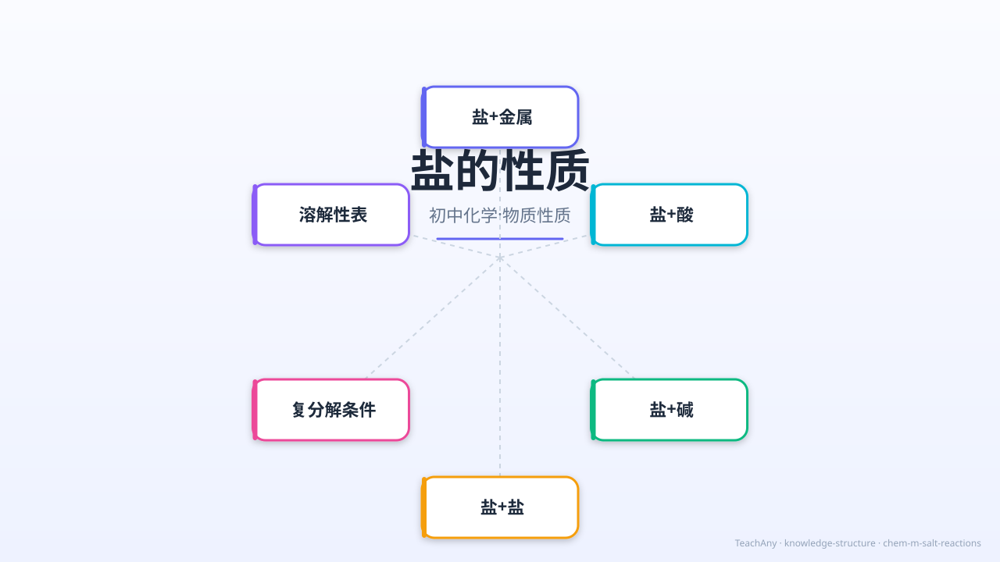
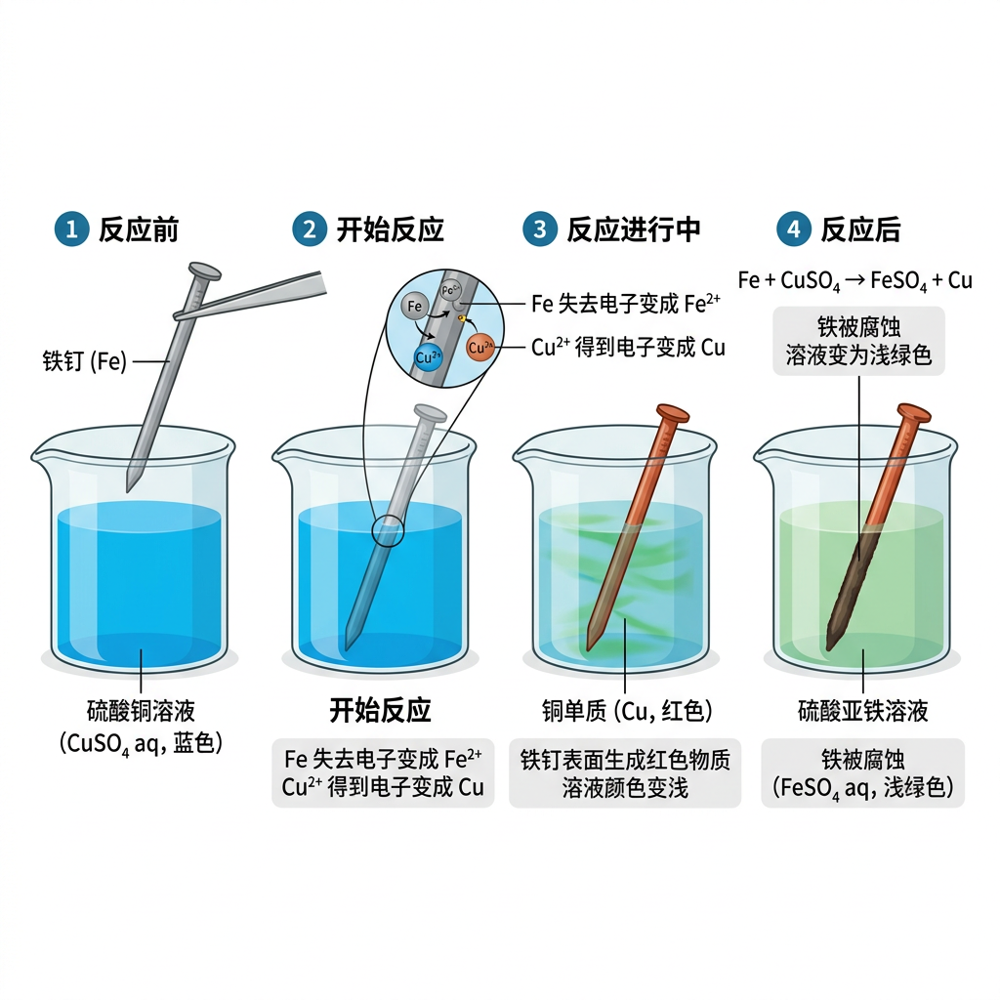
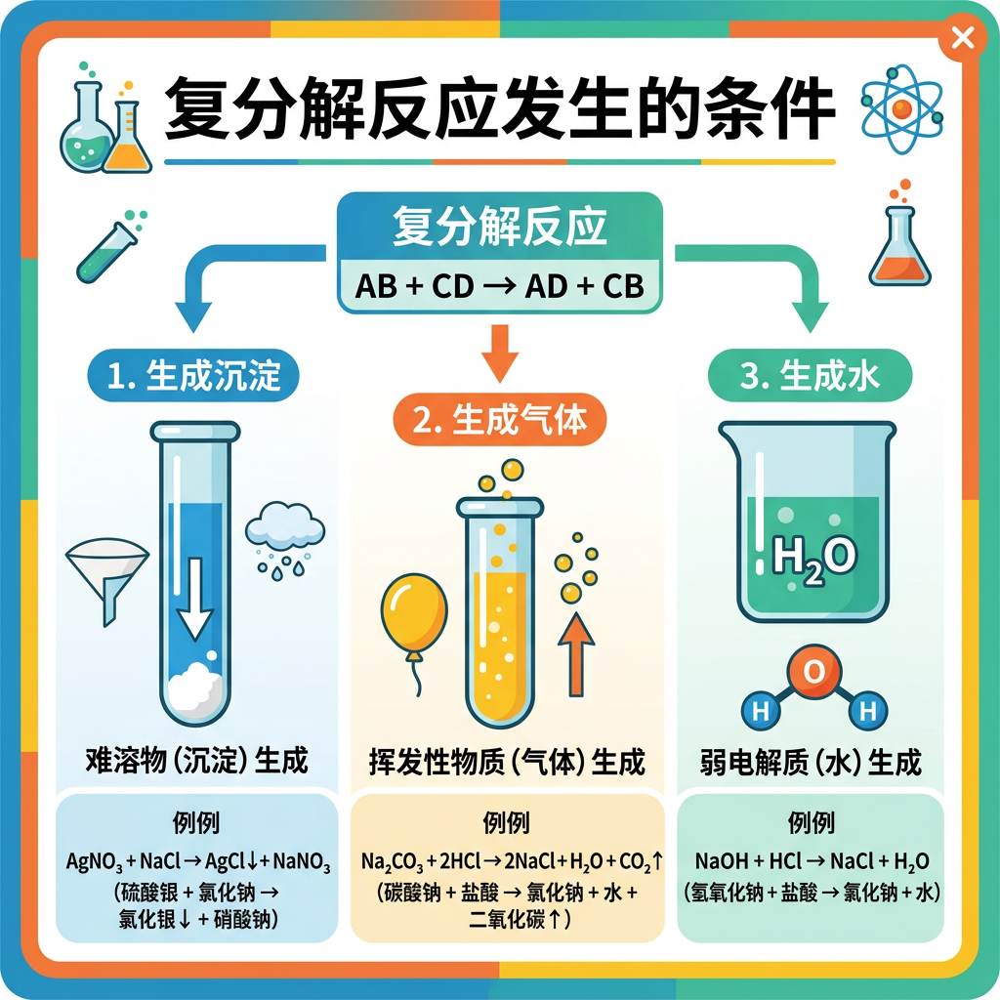

盐的性质
为什么往鸡蛋壳上滴醋会冒泡？碳酸钠能和硫酸铜反应吗？
掌握盐的四类反应规律，你就能预测和解释这些现象。

你最想搞清楚哪个问题？
选一个最让你好奇的，后面内容围绕它展开。
选择或输入后，本课围绕你的问题展开。
学习目标
- 能说出盐参与的四类化学反应（盐+金属、盐+酸、盐+碱、盐+盐）
- 能正确判断复分解反应的发生条件（生成沉淀、气体或水）
- 能书写常见盐反应的化学方程式并配平
- 能运用溶解性表判断两种物质能否反应
先测试一下你的直觉
以下哪个反应不能发生？
盐 + 金属 → 新盐 + 新金属
已经知道：金属活动性顺序表 K Ca Na Mg Al Zn Fe Sn Pb (H) Cu Hg Ag Pt Au
但是问题是：为什么铁能把铜"挤"出来，而铜不能把铁"挤"出来？
所以这一段要解决：活泼金属能从盐溶液中置换出不活泼金属

🔑 反应条件
① 金属必须排在盐中金属的前面
② 盐必须是可溶的（溶液状态）
③ K、Ca、Na 太活泼，直接跟水反应，不适用
🧪 生活实例
• 铁钉浸入硫酸铜 → 表面变红（铜析出）
• 铜片浸入硝酸银 → 表面变白（银析出）
• 湿法炼铜：Fe + CuSO₄ = FeSO₄ + Cu
盐 + 酸 → 新盐 + 新酸
已经知道：酸能跟碱反应（中和），酸能跟活泼金属反应
但是问题是：酸和盐之间也能发生反应吗？条件是什么？
所以要掌握：复分解反应条件——必须有沉淀↓ / 气体↑ / 水生成
产生气体 ↑
鸡蛋壳（碳酸钙）遇醋冒泡

产生沉淀 ↓
检验硫酸根离子
生成水
胃药（碳酸氢钠）中和胃酸
盐+碱 和 盐+盐
盐 + 碱 → 新盐 + 新碱
条件：反应物均可溶，且产物有沉淀生成
💡 蓝色沉淀 Cu(OH)₂ 可用于检验 Cu²⁺ 离子
盐 + 盐 → 两种新盐
条件：两种反应物均可溶，且产物有沉淀
💡 白色沉淀 AgCl 可用于检验 Cl⁻ 离子
反应物（至少一种）可溶 + 生成物中有 沉淀↓ 或 气体↑ 或 水
溶解性口诀 & 速查表

📝 口诀：
钾钠铵硝全溶，盐酸除银亚汞
硫酸去钡铅钙，碳磷酸盐多不溶
碱中可溶钾钠铵钡钙微溶
| Na⁺/K⁺/NH₄⁺ | Ca²⁺ | Ba²⁺ | Cu²⁺/Fe³⁺ | Ag⁺ | |
|---|---|---|---|---|---|
| Cl⁻ | 溶 | 溶 | 溶 | 溶 | 不溶 |
| SO₄²⁻ | 溶 | 微溶 | 不溶 | 溶 | 微溶 |
| CO₃²⁻ | 溶 | 不溶 | 不溶 | 不溶 | 不溶 |
| OH⁻ | 溶 | 微溶 | 溶 | 不溶 | — |
复分解反应预测器
选两种物质，判断能否发生复分解反应，然后点击验证！
习题讲解：判断反应能否发生
📋 题目：向硫酸铜溶液中加入氢氧化钠溶液，判断能否反应？若能反应，写出化学方程式。
🔍 解题思路：
第1步：判断反应类型
硫酸铜（盐）+ 氢氧化钠（碱）→ 属于"盐+碱"类型
第2步：检查反应物可溶性
CuSO₄ 可溶 ✅ · NaOH 可溶 ✅ → 反应物均溶，满足条件
第3步：预测生成物并检查条件
交换阴阳离子 → Cu(OH)₂ + Na₂SO₄
查表：Cu(OH)₂ 不溶（生成沉淀↓）→ ✅ 满足复分解反应条件
第4步：写方程式并配平
现象：产生蓝色沉淀
⚠️ 易错提示：如果生成物全部可溶且无气体无水生成，则反应不能发生。例如 NaCl + KNO₃ → NaNO₃ + KCl，产物全溶，不反应！
以下哪个反应的化学方程式书写正确？
综合应用
实验室有一瓶无标签的无色溶液，已知可能是 NaCl 溶液或 Na₂CO₃ 溶液。
以下哪种方案能一步鉴别它们？
回顾：盐的四类反应
掌握了这四类反应规律和复分解反应条件，你就能预测绝大多数盐的化学行为。